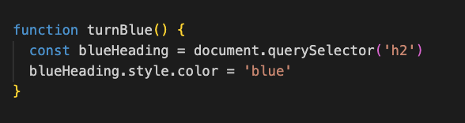

An analogy to describe JavaScript and its relationship to HTML and CSS.
Hyper Text Markup Language (HTML) is the basic building blocks of a webpage It is a text-based approach to describing how content (elements like headings, text, lists) should be displayed on a page.
Cascading Style Sheets (CSS) is a language that describes how HTML element should be displayed in terms of styling. Styling can include color, font, position of elements, spacing between elements, etc.
Javascript (JS) is a language that allows content to be dynamic such as animations and any movement of elements or refreshes on the webpage.
Think of HTML and CSS as a couple in a relationship. HTML wears the pants, CSS is the good looking one. Then they meet JS, a super-active, into extreme sports kind of person. They enter into a polyamourous relationship with JS and together they go dancing. 😅
Explain control flow and loops
Control flow is the order in which the computer executes code. Generally, code is run from the top to bottom (first line to the last line), but this flow can be changed with conditionals and loops.1
Loops allow us to repeat code based on a specified condition being true. It will continue running until this condition returns false.
Think of control flow as your morning coffee routine. Your normal routine could involve:
1. heat the water in gooseneck kettle
2. place the filter paper in your pourover filter
3. measure your coffee beans and grind them
4. wet the filter paper with the hot water
5. place the ground coffee in the filter
6. pour hot water over the coffee grounds
This control flow could be interrupted with a conditional and loop:
☕ conditional in step 3: if we have coffee beans, measure them out and grind them, otherwise go and buy more beans (which interrupts the normal control flow).
☕ loop in step 6: repeat step 6 until you have filled a certain amount of your mug.
What is the DOM?
The Document Object Model (DOM) is our JS "window" or access portal into the contents of a webpage.
It is an interface that contains Javascript objects that represent the content on the page.
These JS objects (elements of the HTML document) are represented as a tree structure in the DOM with branches (called 'nodes') being the child objects.2
The DOM views the HTML document as a tree of JS objects
In the DOM, we can select specific objects (by locating it on tree) in the document and modify their structure, content and style by applying various methods and properties.
For example, we could use the DOM if we wanted to select all h2 headings and change their color to blue. To do this, we would
1. select the h2 objects in the document using document.querySelector('h2')
2. change their color by accessing its style and color objects and making it blue:
Accessing data from arrays and objects
An array is an ordered collection of values that are stored in a variable. 3
Here's an example of an array:
We can access the data inside arrays using indexes. Remembers, arrays are indexed from zero, so the first element in an array is element 0.
We can call members of the band using the index inside bracket notation:
An object is a container storing an unordered collection of related data and functionality. They contain "object literals" which are pairs of properties that consist of a key (or name) and value 4
Here's an example of an object called tennisPlayer which contains the properties first name, last name, age, and number grand slams won:
With objects, keys and values are unordered so indexes do not work. There are two ways we can access an object's property. 5
1. Dot notation: object's name followed by a dot and then the property name (key)
2. Bracket notation. We use ['bracket notation'] if we want to access keys that have numbers, spaces, or special characters.
What are functions?
A function is a group of code designed to perform a particular task or procedure.
Functions are useful because they can be reused (or called) anywhere in the same program. This saves us from having to retype the code whenever we want to perform the same task. 6
The basic syntax of functions consist of the word "function", followed by a meaningful name of the function, a list of parameters in parentheses, and then the statements, contained in {curly brackets}
To follow on from a previous example, say we want to select all the H2 objects and change their color to blue. This would require two lines to code: one to select the H2 objects, and the other to change their text color.
We can group these tasks into a function (which we have called turnBlue()) so that it will do both tasks in one go.

Thanks for reading! Feel free to share your thoughts and suggestions on the blog post above.